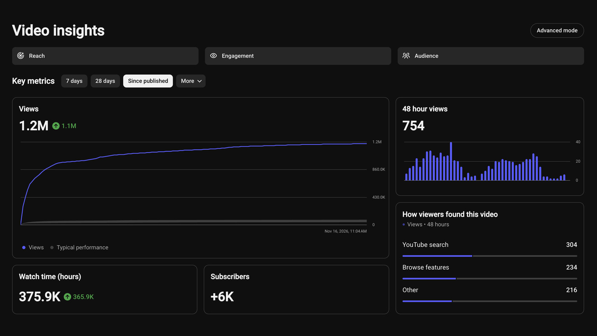
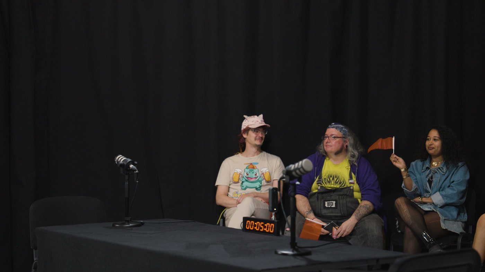
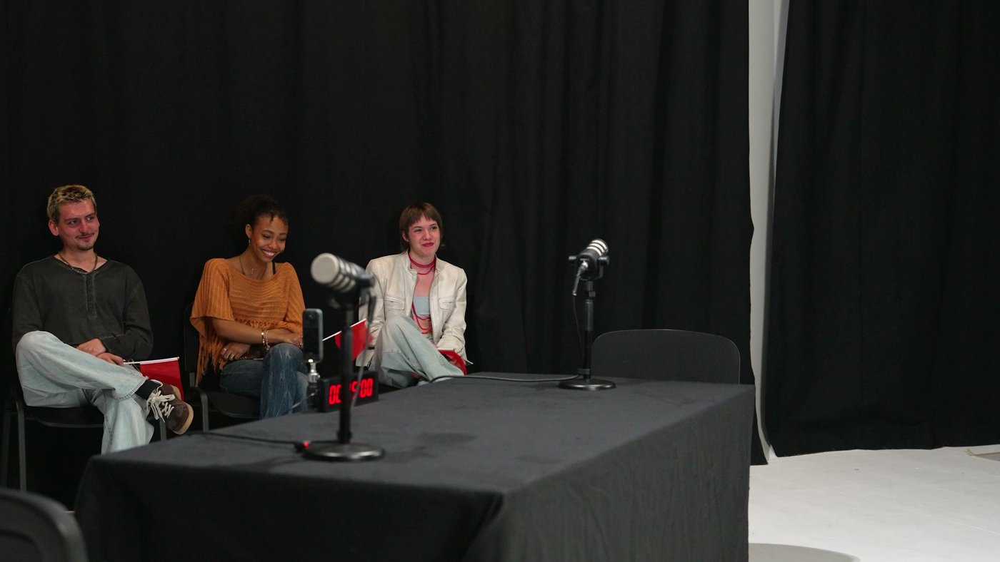

(Case 06) Longform · YouTube
The Break-Out
Eine unserer Produktionen: ein Diskussionsformat im Stil Autorität vs. Gruppe, von PLACEMedia vom Konzept bis zur Veröffentlichung aufgesetzt und produziert — gedreht mit 7 Kameras in einem Filmstudio in Wien. 1,2 Mio. Views, 375,9 Tsd. Stunden Watchtime und +6 Tsd. Abonnenten.

Die Aufgabe
Ein Diskussionsformat im Stil Autorität vs. Gruppe: eine Stimme gegenüber einer ganzen Gruppe an einem Tisch, Thesen im Bild, rote Flaggen in der Hand — aufgesetzt, gedreht, geschnitten, verpackt und veröffentlicht als eine Produktion.
Was wir gemacht haben
- Konzept und Format: Autorität vs. Gruppe, Thesen im Bild, ein Zähler für die roten Flaggen der Gruppe
- Aufbau und Dreh in einem Filmstudio in Wien: 7 Kameras, 2 Videografen und 1 Tontechniker, inklusive Vorstellung der Teilnehmenden
- Schnitt und Ton, vom Rohschnitt bis zum fertigen Film
- Thumbnail und Packaging für die Veröffentlichung
- Clipping-Strategie in der Post: Kurzclips nach Thema, jeweils in zwei Versionen zur Auswahl geschnitten
Quelle: YouTube Studio, Stand 16. November 2026: 1,2 Mio. Views, 375,9 Tsd. Stunden Watchtime, +6 Tsd. Abonnenten.




Du planst etwas in der Art?
Projekt starten →